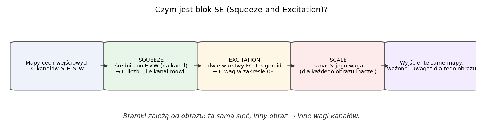
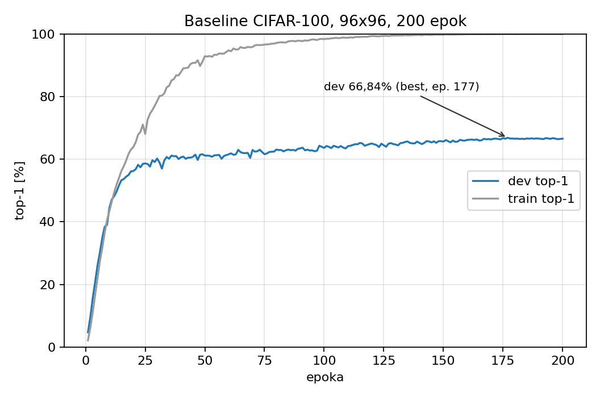
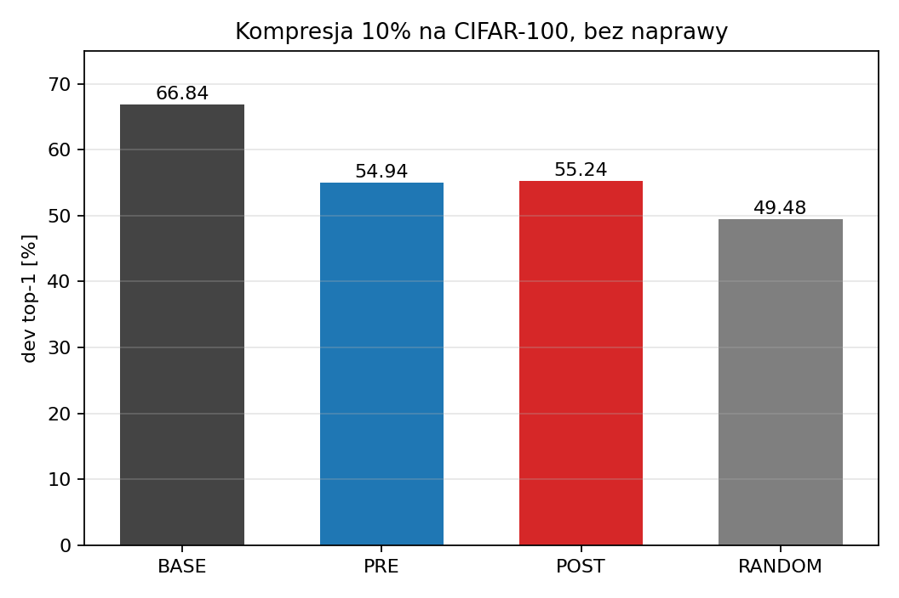
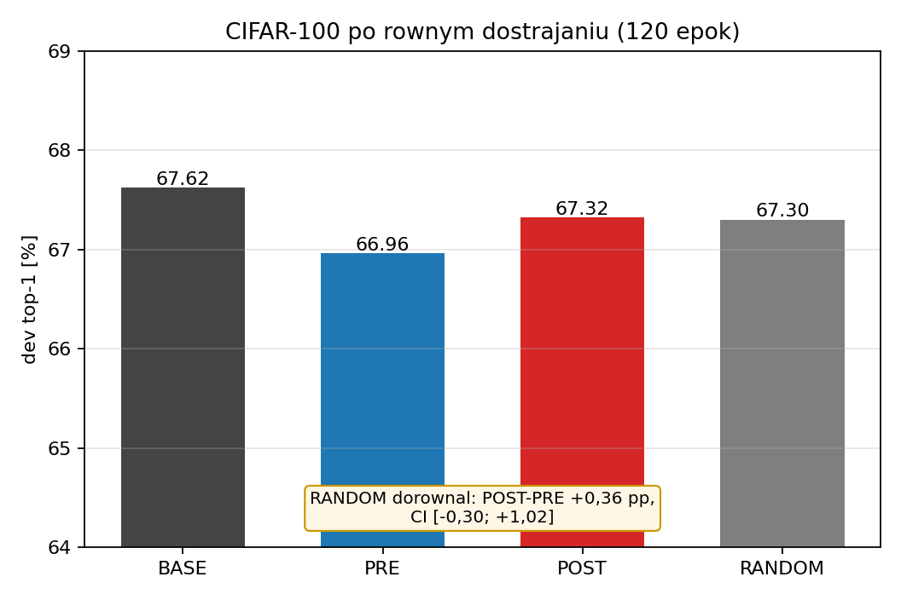
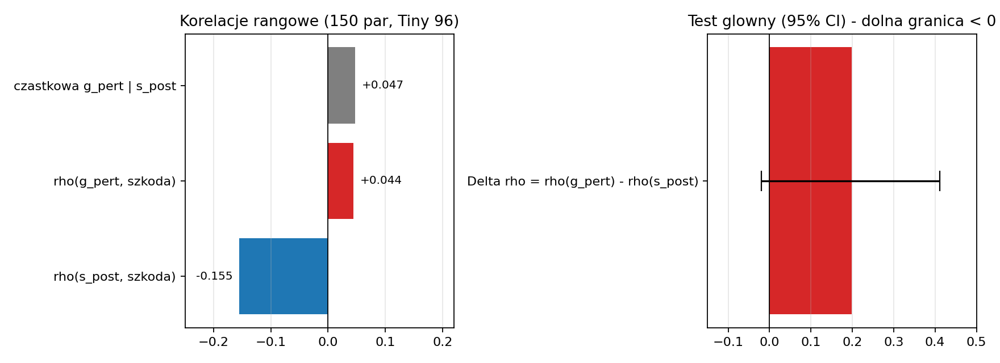
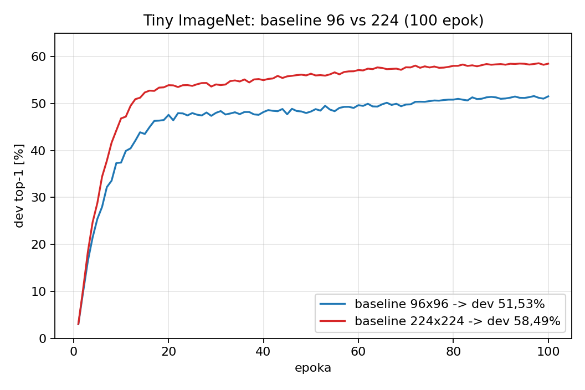
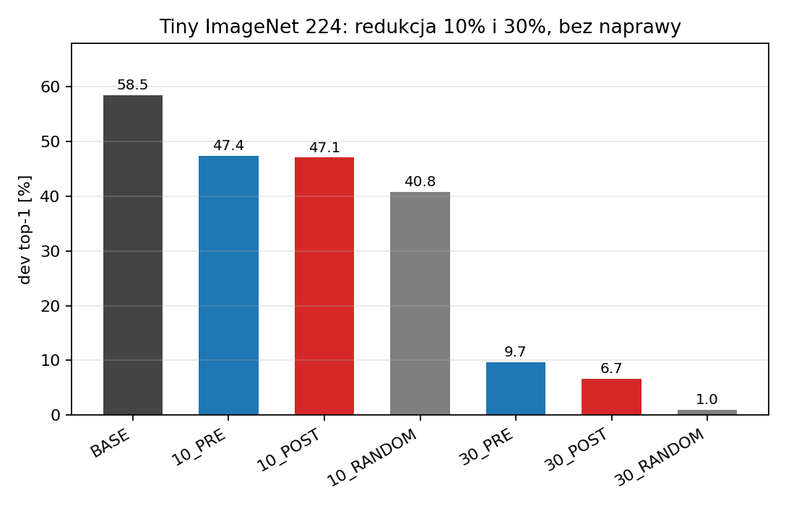
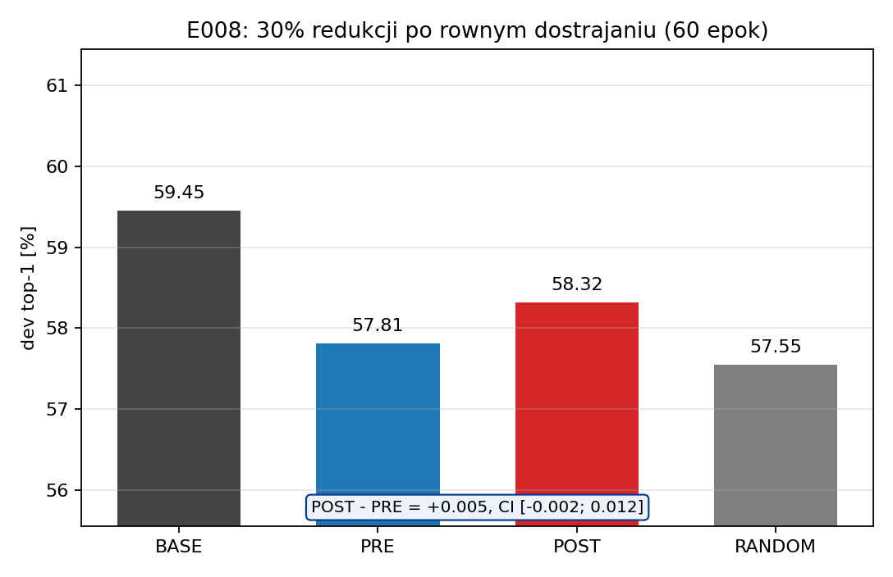
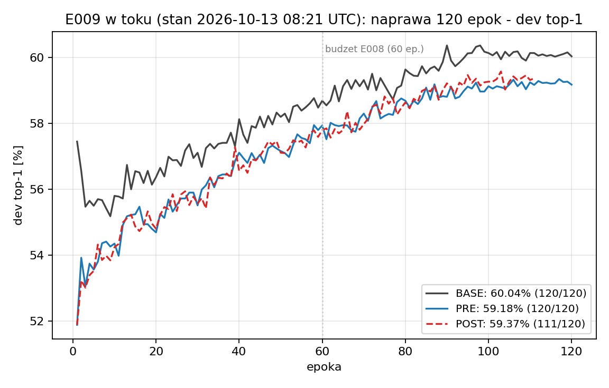
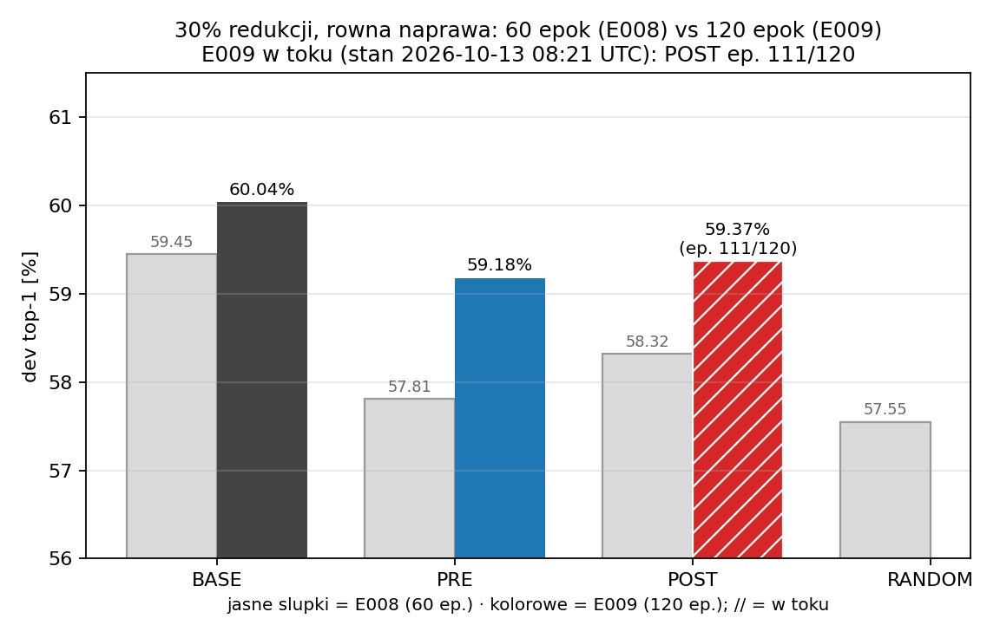

Kompresja sieci CNN a zachowanie atencji kanałowej
Podsumowanie badań 2026 · Lidia Cichońska · stan na 13.10.2026
- Obiekt badań: EfficientNet-B0 z blokami Squeeze-and-Excitation (SE),
trenowany od losowych wag — bez publicznych checkpointów.
- Dane: CIFAR-100 (100 klas) oraz Tiny ImageNet (200 klas), rozdzielczości 96×96 i 224×224.
- Środowisko: 4×RTX 2080 Ti, DDP, treningi deterministyczne, Conda
attention
(Python 3.11, PyTorch 2.12). Ocena wyłącznie na dev; rezerwa i test nietknięte.
- Repozytorium: github.com/Lidka99/attention-aware-compression — kod, protokoły, raporty;
duże artefakty lokalnie, z hashami.
- Pytanie w jednym zdaniu: czy zachowanie bramek SE pozwala lepiej wybierać kanały
do scalenia przy kompresji niż kryterium przed SE i niż wybór losowy — przy równym budżecie
kompresji i naprawy?
Trwa E009: naprawa 120 epok (stan 2026-10-13 08:21 UTC) — BASE 60,04% (120/120), PRE 59,18% (120/120), POST w toku (ep. 111/120). Wyniki E008 na slajdach „Etap 2"; po zakończeniu biegu uruchom `odswiez_e009.py`.
W skrócie — co chciałam osiągnąć i co z tego wyszło
- Chciałam sprawdzić: czy sposób, w jaki sieć sama ocenia ważność swoich kanałów cech
(bramki SE — patrz następny slajd), da się wykorzystać do lepszej kompresji:
które kanały można scalać, żeby sieć po zmniejszeniu zachowała jak najwięcej jakości.
- Jak to sprawdziłam: 9 eksperymentów od zera (E001–E009), zawsze to samo porównanie:
wybór po SE (POST) vs wybór przed SE (PRE) vs losowo (RANDOM) — przy
równym budżecie kompresji i naprawy, z przedziałami ufności.
- Co wyszło: selekcja oparta na podobieństwie kanałów działa (wyraźnie lepiej niż
losowanie), ale bramki SE nie dodają przewagi nad wyborem przed SE — w żadnym
z badanych budżetów. Ostatni eksperyment (E009, 120 epok naprawy) domyka ten wątek dziś.
- Co z tego mam: solidne baseline'y i pipeline kompresji, rzetelnie zamknięty wątek
negatywny oraz jasne kryteria wyboru dalszych dróg (zamiast zgadywania). Szczegóły dalej.
Cel i pytania badawcze (z zaznaczoną potencjalną nowością)
- Cel nadrzędny: sprawdzić, czy zależna od obrazu atencja kanałowa (bramki SE) pozwala
lepiej wybierać kanały do scalenia niż kryterium przed SE i wybór losowy — przy
równym budżecie kompresji i naprawy.
- Droga: rzetelne baseline'y od zera → pomiar realnej szkody → porównanie po równym
dostrojeniu (ono rozstrzyga); metodologia: protokoły zamrażane, CI, wynik negatywny
pełnoprawny (szczegóły na slajdzie „Metodologia").
- Pytania badawcze:
- RQ1 ★ (rdzeń potencjalnej nowości): czy kryterium po SE (POST) bije przed SE (PRE)
i wybór losowy po równym dostrojeniu przy 30% redukcji? (E008, E009)
- RQ2: czy bramki SE przewidują szkodę scalenia ponad podobieństwo po SE? (E006)
- RQ3: czy dłuższy budżet naprawy (120 vs 60 epok) zmienia obraz różnic? (E009)
- RQ4: jaki baseline i jaka głębokość kompresji są potrzebne, by selekcja w ogóle
zaczęła decydować? (E003/E004 → E008)
Potencjalna nowość (kandydat — do domknięcia audytem macierzy nowości):
kontrolowany test, czy istniejące (nietrenowane pod kompresję) bramki SE poprawiają dobór
kanałów do scalenia po równym budżecie naprawy — z rozdzieleniem „przewidywania szkody" (E006) od
„jakości po naprawie" (E008/E009) i kontrolami PRE/RANDOM. Uzupełnienie literatury: SE sugeruje
użytek wag ważności w kompresji, ale metody scalania/foldingu używają podobieństwa, wag lub
uczonych scorerów (np. ADSC); nie znaleźliśmy pracy testującej wprost tę hipotezę przy równym
budżecie. To kandydat, nie potwierdzona luka — pełny audyt (macierz nowości) w toku.
Czym jest SE (Squeeze-and-Excitation) — najprościej

- Najprościej: SE to mały moduł doklejony do warstwy splotowej, który dla każdego
obrazu osobno ocenia, które kanały cech są teraz ważne, i przemnaża je przez wagi 0–1.
Analogia: automatyczny korektor dźwięku — dla każdego utworu (obrazu) sam ustawia
głośność pasm (kanałów).
- Krok po kroku: (1) Squeeze — z każdego kanału robimy jedną liczbę (średnia po
całej mapie cech), czyli „ile ten kanał mówi na tym obrazie"; (2) Excitation — mała
sieć (dwie warstwy FC + sigmoid) zamienia te liczby na wagi 0–1; (3) Scale — każdy
kanał mnożony przez swoją wagę.
- Dlaczego się to stosuje: to tania „uwaga" (kilka procent parametrów), pozwala sieci
wzmacniać przydatne kanały i wyciszać nieprzydatne — standard m.in. w EfficientNetach.
- Dlaczego to dla nas ważne: skoro wagi SE mówią „co jest ważne dla tego obrazu",
to hipoteza pracy: użyć ich jako wskazówki, które kanały scalać przy kompresji.
Właśnie tę hipotezę testujemy — i jak dotąd nie znajdujemy dla niej potwierdzenia.
Literatura (1): atencja kanałowa
- SE — Squeeze-and-Excitation Networks (Hu, Shen, Albanie, Sun, Wu; CVPR 2018,
arXiv:1709.01507): bramki mówią, które kanały są ważne dla danego
obrazu; to dynamiczna, zależna od wejścia rekablizacja kanałów. Autorzy wprost piszą
w zakończeniu, że wagi ważności z SE „mogą być użyteczne m.in. w przycinaniu sieci do
kompresji" — stąd nasza hipoteza.
- ECA-Net (Wang i in.; CVPR 2020, arXiv:1910.03151): wydajna
atencja kanałowa bez redukcji wymiarowości (1D conv po sąsiednich kanałach); na ResNet-50
+2,28 pp top-1 przy znikomym koszcie (80 parametrów). Warianty te pokazują, że sposobów
liczenia atencji jest wiele.
Wniosek dla nas: „atencja kanałowa" to dojrzały mechanizm — pytanie badawcze brzmi,
czy to konkretne zachowanie bramek SE wnosi coś ponad samo podobieństwo aktywacji przy scalaniu.
Literatura (2): scalanie, przycinanie, folding — i nasze miejsce
| Praca | Mechanizm | Co z tego bierzemy |
|---|
Neuron Merging
Kim i in., NeurIPS 2020, arXiv:2010.13160 |
scala „przycinane" neurony z najbardziej podobnymi (cosinus + skalowanie), data-free, z kompensacją |
to, co i jak się scala, ma znaczenie; kryterium podobieństwa to realny punkt odniesienia |
Pick-or-Mix
Kumar i in., 2024, arXiv:2406.10935 |
dynamiczne próbkowanie kanałów per-piksel, zależne od aktywacji |
selekcja kanałów może być zależna od wejścia — pytanie, czy da się to robić lepiej niż losowo |
Cut Less, Fold More
Saukh i in., 2026, arXiv:2602.18116 |
folding = grupowanie podobnych wag/kanałów jako rzut ortogonalny; teoretycznie bliżej oryginału niż pruning |
folding zwykle bije pruning przy średniej–dużej kompresji (ponad 1000 checkpointów) |
GRAIL
Tang i in., CoPL 2026, arXiv:2602.23795 · PMLR 328 |
kompensacja po foldingu/pruningu: Gram + ridge least-squares na małym zbiorze kalibracyjnym |
naprawa „po fakcie" bez gradientów to silny baseline dla naszego etapu 2 |
ADSC
Iqbal, Silva, Sci. Rep. 2026 |
lekki MLP uczy się ocen ważności filtrów |
najbliższa praca „atencja → kompresja"; my pytamy o istniejące bramki SE, nie uczymy nowego scorera |
Shahriar 2026
arXiv:2607.01984 |
kontrolowane badanie lekkich CNN; EfficientNet-B0 od zera na Tiny ImageNet 224 |
kotwica baseline'ów: 20 ep = 57,43%, 100 ep = 60,54%; stąd receptura E007 |
Uczciwa uwaga: pełna macierz nowości (literature/MATRIX.md) ma
status „lista startowa, nie ukończony audyt" — przed publikacją trzeba przypisać różnice do wersji
i sekcji prac. Brak rozstrzygnięcia nie oznacza zidentyfikowanej luki.
Hipoteza i warunek weryfikacji
- Hipoteza: kanały podobne przed SE mogą być różnie ważone dla różnych obrazów,
więc zachowanie bramek SE może poprawiać dobór par do scalenia ponad zwykłe podobieństwo aktywacji.
- Trzy kryteria, wspólny operator scalenia i równy budżet naprawy:
- POST — kryterium liczone po SE (z bramkami),
- PRE — kryterium liczone przed SE (samo podobieństwo aktywacji),
- RANDOM — pary/scalenia losowe.
- Test główny: POST − PRE po równym dostrojeniu; sukces = dolna granica 95% CI > 0
(bootstrap 10 000, po klasach). Kontrola RANDOM mówi, czy selekcja w ogóle coś daje.
- Interpretacja: brak przewagi POST nad PRE to zaprzeczenie hipotezy „attention-aware"
w badanym zakresie — nie „słaby wynik" (wynik negatywny + uczciwa kontrola = wiedza).
Metodologia i odtwarzalność
- Protokoły zamrażane przed biegiem (wersjonowane, z hashami); wynik = ostatnia epoka,
bez early stoppingu i wyboru epoki po fakcie.
- Fizyczna redukcja parametrów (modele istotnie mniejsze), wspólny operator scalenia,
kalibracja α/β na 1000 obrazach; selekcja przed pomiarem szkody.
- Sparowane porównania po obrazach (te same 10 000 obrazów dev dla wszystkich wariantów),
bootstrap 10 000, stratyfikacja po klasach, progi ustalone z góry.
- 4 GPU = jeden bieg dzielony na 4 rangi, nie 4 niezależne powtórzenia; ograniczenie:
jeden seed na eksperyment (do rozstrzygnięcia przed publikacją).
- Nieudane biegi i wyniki negatywne zostają w dokumentacji (np. nieudany bieg 1.0 E006);
każdy raport ma pytanie, konfigurację, niepewność, koszt i hashe artefaktów.
Plan badań — co, po co i z jakim wynikiem
| Badanie | Po co | Wynik | Status |
|---|
Baseline CIFAR-100
E001, od zera, 200 ep. |
punkt odniesienia do pierwszych testów kompresji |
dev 66,84%; silne przeuczenie (train ≈99,9%) | ukończone |
Obserwacja bloków SE
E002, 1000 obr., wagi stałe |
czy jest na czym budować: podobieństwo i zmienność bramek |
podobieństwo utrzymuje się po SE; średnia/szablon go nie tłumaczą | ukończone |
Pierwsza kompresja 10%
E003, CIFAR-100, bez naprawy |
czy kryterium po atencji bije przed atencją i losowe |
POST≈PRE; obie selekcje > losowa surowo | ukończone |
Równe dostrajanie
E004, 120 ep. |
czy różnice przetrwają naprawę |
różnice zniknęły; RANDOM dorównał | ukończone |
Baseline Tiny ImageNet 96×96
E005 |
mniej przeuczony punkt odniesienia |
dev 51,53% | ukończone |
Predykcja szkody z bramek SE
E006, 150 par |
czy bramki przewidują szkodę scalenia ponad podobieństwo |
brak wartości predykcyjnej — wątek zamknięty | ukończone |
Baseline Tiny ImageNet 224×224
E007, receptura literaturowa |
jakość porównywalna z literaturą pod publikację |
dev 58,49% (kotwica: 60,54%) | ukończone |
Kompresja 30% na baseline 224
E008, 60 ep. naprawy |
czy przy głębszej szkodzie selekcja decyduje po naprawie |
etap 1: selekcja > losowa surowo, ale POST < PRE; etap 2: POST−PRE nieistotne |
ukończone |
Dłuższa naprawa 120 epok
E009 |
czy dłuższy budżet zmienia obraz różnic |
w toku — rozstrzyga 13.10 | w toku |
Baseline CIFAR-100 (E001) — punkt wyjścia i jego ograniczenie

E001: EfficientNet-B0 od losowych wag, CIFAR-100, 96×96, 200 epok.
- dev 66,84% (best, ep. 177; ostatnia epoka 66,54%), train ≈99,9% — silne przeuczenie:
nadmiarowe kanały łatwo usuwać. Stąd decyzja o dalszych badaniach na Tiny ImageNet.
- Wniosek metodologiczny: baseline musi być mocny i mało przeuczony, inaczej testy kompresji
mierzą głównie nadmiarowość przeuczonego modelu.
E002: obserwacja bloków SE — czy jest na czym budować?
- 1000 obrazów, 100 par najbardziej podobnych przed SE (blok
features.4.1), wagi stałe.
- Pary bardzo podobne przed SE pozostają bardzo podobne po SE (mediana cosinusa 0,946 → 0,958).
- Wagi bramek zmieniają się między obrazami, ale zmiana cosinusa jest typowo dodatnia;
nie ma prostego dowodu, że „podobne przed atencją stają się przez nią różne".
- Wniosek: sam sygnał podobieństwa nie wystarcza za projekt kryterium — trzeba zmierzyć
rzeczywistą szkodę scalenia i porównać wybory po równym dostrojeniu.
Pierwsza kompresja: redukcja 10% bez naprawy (E003)

- 4 135 648 → 3 721 424 parametry (−10,02%; 1016 kanałów w 15 blokach), wspólny operator,
kalibracja α/β; bez treningu gradientowego.
- BASE 66,84 · PRE 54,94 · POST 55,24 · RANDOM 49,48.
- Test główny POST−PRE: +0,30 pp, CI [−0,60; +1,22] — brak przewagi po atencji.
- Obie selekcje > losowa surowo o ~5,5–6 pp — realny sygnał podobieństwa istnieje.
- Na tle literatury: Neuron Merging i pokrewne metody też dobierają kanały po
podobieństwie/wadze; informacja po SE nie dodaje przewagi przy tym budżecie.
Równe dostrajanie po kompresji (E004) — kluczowy wynik negatywny

- Po 120 epokach identycznego dostrajania: BASE 67,62 · PRE 66,96 · POST 67,32 · RANDOM 67,30.
- POST−PRE +0,36 pp, CI [−0,30; +1,02] — różnice między kryteriami zniknęły;
wybór losowy dorównał atencyjnemu.
- Duże spadki z E003 okazały się odwracalne (brakowało naprawy), ale przy 10% o wyniku
decyduje naprawa, a nie sposób wyboru kanałów.
- Konsekwencja: szukać dalej przy większej kompresji (tam selekcja trudniejsza) i na
mocniejszym baseline — to stało się programem E008/E009.
Czy bramki SE przewidują szkodę scalenia? (E006)

- 150 rozłącznych par (300/480 kanałów), pomiar realnej szkody scalenia na 1000 obrazach.
- Kontrola dodatnia działa kierunkowo: ρ(s_post, szkoda) = −0,155
(podobniejsze kanały → mniejsza szkoda).
- Sygnał bramkowy: ρ(g_pert) = +0,044; różnica Δρ = +0,199, CI [−0,020; +0,411] —
kryterium sukcesu (dolna granica > 0) nieprzekroczone; korelacja cząstkowa +0,047;
kontrola FWER p = 0,081.
- Wątek zamknięty zgodnie z protokołem: bramki SE nie przewidują szkody scalenia ponad
samo podobieństwo po SE.
Nowe baseline'y Tiny ImageNet (E005, E007) — zgodność z literaturą

- E005 (96×96, 100 ep.): dev 51,53% (train 98,5%); E007 (224×224, 100 ep.): dev 58,49%
(5849/10000; best 58,58%), train 99,5%; czas: 4 h 37 min na 4 GPU.
- Receptura E007 wg kotwicy (Shahriar 2026: AdamW 3e-4, wd 0,01, LS 0,1, RRC 0,80–1,00
+ color jitter); naprawiony błąd kolejności seedowania z E005.
- Porównanie jakościowe: literatura 60,54% (100 ep., ich oficjalny val); nasze 58,49%
na dev — ten sam rejon; różnice wynikają z innego zbioru oceny, batcha i warmupu.
- Baseline 224 jest wystarczający jako punkt odniesienia do badań kompresji pod publikację.
Kompresja 10% i 30% na baseline 224 — etap 1 bez naprawy (E008)

- 10%: PRE 47,42 · POST 47,07 · RANDOM 40,79
(BASE 58,49 odtworzony co do obrazu: 5849/10000).
- 30%: PRE 9,67 · POST 6,65 · RANDOM 0,99 — bez naprawy model praktycznie się rozpada.
- Selekcja (PRE/POST) > losowa o +5,7 do +8,7 pp, ale POST < PRE przy obu
budżetach (odwrotnie niż na CIFAR-100). Sygnał wyboru jest, ale nie „po atencji".
Etap 2: wynik po 60 epokach równego dostrajania (E008)

- Po naprawie: BASE 59,45 · POST 58,32 · PRE 57,81 · RANDOM 57,55.
- Test główny POST−PRE: +0,51 pp, CI [−0,18; +1,19] — próg (dolna granica > 0)
nieprzekroczony. Hipoteza „attention-aware" niepotwierdzona.
- POST−RANDOM: +0,77 pp, CI [+0,03; +1,50] — jedyna (o włos) istotna przewaga nad
losowaniem; PRE−RANDOM: +0,26 pp, CI [−0,49; +0,99] — brak różnicy.
- Wszystkie skompresowane modele poniżej BASE o 1,13–1,90 pp (istotnie) — kompresja 30%
nadal kosztuje nawet po naprawie 60 epok.
- Pytanie otwarte: czy 60 epok wystarczyło? Adresuje to E009 (120 epok, jeden ciągły cosine).
E009 — dłuższy budżet naprawy: 120 epok
- Osobny, zamrożony eksperyment: 120 epok, jeden ciągły cosine, te same modele startowe
(identyczna kompresja 30% i selekcja co E008) — izoluje efekt budżetu naprawy.
- Start: 2026-10-12 15:59 UTC (automatycznie po E008); przewidywany koniec: 13.10 ~14:30 UTC.
- Status biegu: w toku (stan 2026-10-13 08:21 UTC); BASE i PRE po pełnych 120 epokach, POST w toku (ep. 111/120), RANDOM w kolejce.
- dev top-1: BASE 60,04% (120/120) · PRE 59,18% (120/120) · POST 59,37% (ep. 111/120) · RANDOM (w kolejce).
- Dla porównania E008 (60 epok): BASE 59,45 · PRE 57,81 · POST 58,32 · RANDOM 57,55.
- Wniosek z części danych: ukończone warianty poprawiły się względem 60 epok (BASE +0,59 pp, PRE +1,37 pp) — dłuższa naprawa realnie podnosi jakość.


Kryterium rozstrzygające (ustalone przed biegiem): POST−PRE po 120 epokach,
sukces = dolna granica 95% CI > 0 (bootstrap 10 000, seed 20261017, po klasach).
Po zakończeniu launcher sam zapisuje summary.json; skrypt
odswiez_e009.py podmienia wyniki i wykresy.
Co wyszło, a co nie wyszło — po ludzku
W jednym zdaniu: chciałam wykorzystać „uwagę", którą sieć sama sobie
liczy (bramki SE), do lepszej kompresji; sprawdziłam to w 9 eksperymentach z równymi kontrolami;
wynik: selekcja kanałów działa, ale SE nic ponad nią nie dodaje — to główny rezultat.
Wyszło: rzetelne baseline'y od zera (CIFAR-100 66,84%; Tiny 96 51,53%,
Tiny 224 58,49% — zgodne z literaturą 60,54%); kontrolowany pipeline kompresji
(fizyczna redukcja, wspólny operator, kalibracja, CI); wybór kanałów po podobieństwie działa
surowo (+5,5–8,7 pp nad losowym); bramki SE uczciwie zamknięte (kontrola FWER);
E008: POST jedyny (o włos) istotnie ponad losowaniem; E009: dłuższa naprawa podnosi poprzeczkę
(BASE 60,04%, PRE 59,18%).
Nie wyszło: hipoteza „attention-aware" niepotwierdzona — POST nie
przewyższa PRE ani po naprawie (10%, CIFAR-100), ani surowo na Tiny 224; w E008 po 60 epokach
POST−PRE +0,51 pp z CI obejmującym 0; bramki SE nie przewidują szkody scalenia ponad podobieństwo;
po równym dostrojeniu przy 10% różnice między kryteriami znikają; nowość badawcza wciąż
niepotwierdzona — audyt wobec literatury nieukończony.
Wnioski i plan dalszy
- E009 (120 epok, w toku) rozstrzyga dziś po południu: trwała przewaga POST−PRE (ścieżka publikacyjna) albo brak różnic (zamknięcie wątku selekcji przy badanych budżetach).
- Scenariusz A (różnice znikają): zamknięcie wątku przy badanych budżetach; decyzja
między pracą negatywno-analityczną a zmianą pytania (większe kompresje, kwantyzacja,
inne mechanizmy uwagi).
- Scenariusz B (różnice zostają): ścieżka publikacyjna na baseline 224 (pełna kompresja,
więcej kryteriów, dodatkowe seedy).
Pytania do omówienia:
- Czy praca negatywno-analityczna („kiedy atencja nie pomaga w kompresji")
jest akceptowalna jako rdzeń doktoratu?
- Priorytet dalszych badań: większe budżety kompresji, kwantyzacja, czy inne mechanizmy uwagi?
- Wymagania co do liczby seedów i powtórzeń przed publikacją (obecnie 1 seed/eksperyment)?
- Czy budować na foldingu (Cut Less/Fold More, GRAIL) jako głównym operatorze scalenia?
Wcześniejsze etapy doktoratu: attention_v2 — bramkowanie kanałów
Bieżąca linia E001–E009 jest od tych etapów niezależna (decyzja z 2026-09-26:
kod, eksperymenty i wyniki od zera, bez importu z attention_v2/attentionv3). Poniżej kontekst
historyczny — wcześniejsze podejścia do pytania „jak dynamicznie oszczędzać obliczenia w CNN".
- Cel: czy uczenie bramek kanałów/filtrów w ResNet-18 (static L1/SCA, SE, Gumbel) daje
kontrolę kompromisu jakość–kompresja na CIFAR-10/100 i realny zysk czasu. Równolegle warstwa
metodologiczna: 6 markerów M1–M6 i audyt wiarygodności danych (duplikaty, przecieki train–test).
- Kluczowe wyniki (CIFAR-10, 10 000 testu, seed 42): standard 93,48% [92,98; 93,91];
static L1 β=0,2 91,58% (−1,90 pp, CI różnicy [−2,43; −1,42]); β=0,5 91,28%;
SE 91,49%; Gumbel 92,60%. Proxy sparsity 84,3%/90,2% (próg 0,001; β=0,5 usuwa
1731/1920 kanałów). Czas: standard 12,19 ms/partia, warianty bramkowane 12,69–13,17 ms
— brak zysku.
- Audyt danych: CIFAR-100: 14 duplikatów w train, 2 w teście, 10 par train–test;
pilot CIFAR-100: 71,83/71,25/71,59% vs baseline 72,20%.
- Status: etap zamknięty negatywnie (brak przewagi jakościowej i brak zysku
czasu); wycofana teza o strukturalnym przycięciu Gumbela.
- Ograniczenia: jeden seed; soft gating nie omija operatorów (proxy sparsity ≠
przyspieszenie); M6 to symulacja FP32→INT8; progi decyzyjne robocze.
- Wniosek: audytowalny pipeline i framework M1–M6, ale brak podstaw do tezy
o przewadze bramkowania kanałów.
Źródła: attention_v2/raport_badania.md, raport_dla_prowadzacego_2026-07-21_PL.md,
sprawozdanie_wiarygodnosc_danych_PL.md.
Wcześniejsze etapy doktoratu: attentionv3 — routing budżetu i early exit
- Cel: czy polityka zależna od obrazu rozdzieli stały budżet (40/64 grup kanałów,
62,5%) lepiej niż static pruning i utility-only (ResNet-50; CIFAR-100/Tiny ImageNet).
Po negatywach pivot (19.08.2026) na adaptive depth / early exit.
- Negatywy routingu kanałów: globalny UCLA 69,82 vs utility 71,58 (−1,76 pp, CI
[−2,58; −0,93]); korelacja uncertainty–błąd 0,054 (próg 0,25), ECE 22,5%; value-of-compute:
średnia −0,28 pp (seedy +0,03 / −0,59); klonowanie decyzji oracle'a poniżej majority;
semantic feedback 49,83 vs static 55,19 (−5,36 pp).
- Oracle (górna granica): +10,94 pp (60,16→71,09%) i +11,91 pp (60,74→72,66%) —
potencjał routingu istnieje, ale nie dał się sklonować z dostępnych sygnałów.
- Early exit (3 seedy, Tiny ImageNet, 20 epok): 54,18 ± 0,75% vs full-depth
54,25 ± 0,62% (−0,07 ± 0,21 pp przy koszcie 84,92% obliczeń); latency batch-1:
mediana 4,82 vs 5,65 ms (−14,6%). Kontrola static depth vs adaptive: seed 42 +1,41 pp,
seed 123 −0,21 pp (seed 2026 w toku).
- Status: zamknięte negatywnie: UCLA, value-of-compute, oracle action cloning, routing
po layer1/2, semantic feedback; w toku: static-depth seed 2026, ECE/risk–coverage,
end-to-end latency (batch >1).
- Ograniczenia: maski zerują aktywacje, ale nie omijają konwolucji (brak realnego
speedupu); oracle używa etykiet (tylko górna granica); pilot 20 epok; latency tylko batch-1,
1 seed; brak ImageNet.
- Wniosek: rzetelny wynik negatywny dla dynamicznego routingu kanałów + obiecujący,
wieloseedowy pilot adaptive depth do domknięcia przed publikacją.
Źródła: attentionv3/RAPORT_DLA_PROMOTORA_CALOSC_BADAN_ATTENTION_2026-08-24.md,
EARLY_EXIT_REPLICATION_REPORT_2026-08-21.md, SEMANTIC_FEEDBACK_NEGATIVE_RESULT_2026-08-24.md.